Module 3 — Industrial Graphics | Pages 155-182
Lab 4 – Using Situational Awareness Dashboard Symbols
AVEVA™ Operations Management Interface 2023
Lab 4 – Using Situational Awareness
Dashboard Symbols
Introduction
In this lab, you will create a sub-toolset under Training on the Graphics tab for organizing symbols.
You will use the SA_ColumnChart symbol from Dashboard Tools in the Situational Awareness
Library to create an overview symbol and configure it to show level and temperature information
for mixers in an area. Then, you will link the symbol to an area object in the Galaxy.
Once you create one symbol and link it to an area object, you will import some prebuilt symbols
and link them to other area objects in the Galaxy.
You will test your ViewApp in a ViewApp preview session and be able to view the symbols, such as
the one shown below.
Content workflow highlight: Linking content to an object
Objectives
Upon completion of this lab, you will be able to:
Create a symbol on the Graphics tab
Search for symbols to embed in the Graphic Editor
Embed symbols from the Situational Awareness Library
Configure embedded symbol wizard options and custom properties
Substitute strings for an embedded symbol
Substitute references for an embedded symbol
Configure the Content Type property of a symbol
Link content to instance objects
Change content name within an object
Import symbols
Use the Auto-Fill content feature to display content while navigating a ViewApp at runtime
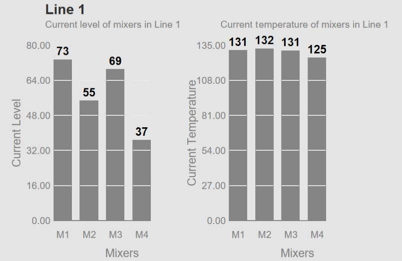
Module 3 – Industrial Graphics
AVEVA™ Training
Create a New Graphic Toolset and a Symbol
In the following steps, you will create a graphic toolset on the Graphics tab to organize the symbols
you will create for this course. Then you will create a new symbol named Line1_Overview.
1.
On the Graphics tab, right-click the Training toolset and select New | Graphic Toolset.
A new toolset with the default name is created under Training.
2.
Rename the new toolset to Symbols.
3.
Right-click the Training \ Symbols toolset and select New | Symbol.
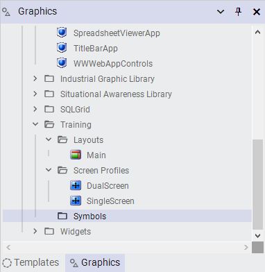
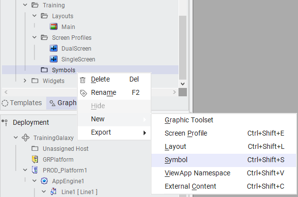
Lab 4 – Using Situational Awareness Dashboard Symbols
AVEVA™ Operations Management Interface 2023
A new symbol with the default name is created in the Training \ Symbols toolset.
4.
Rename the new symbol to Line1_Overview.
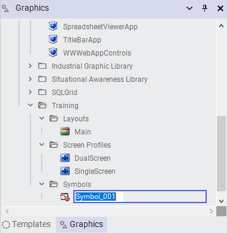
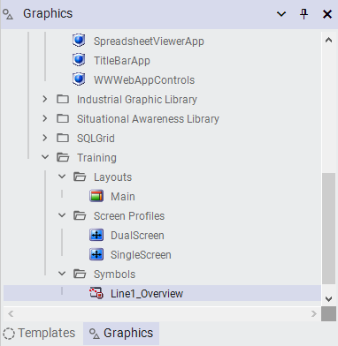
Module 3 – Industrial Graphics
AVEVA™ Training
Configure Content Type for the Symbol
In the next steps, you will open the Line1_Overview symbol in the Graphic Editor and configure a
content type for it.
5.
On the Graphics tab, in the Training \ Symbols toolset, double-click Line1_Overview to
open it in the Graphic Editor.
The Graphic Editor appears.
You can maximize the editor to optimize the view.
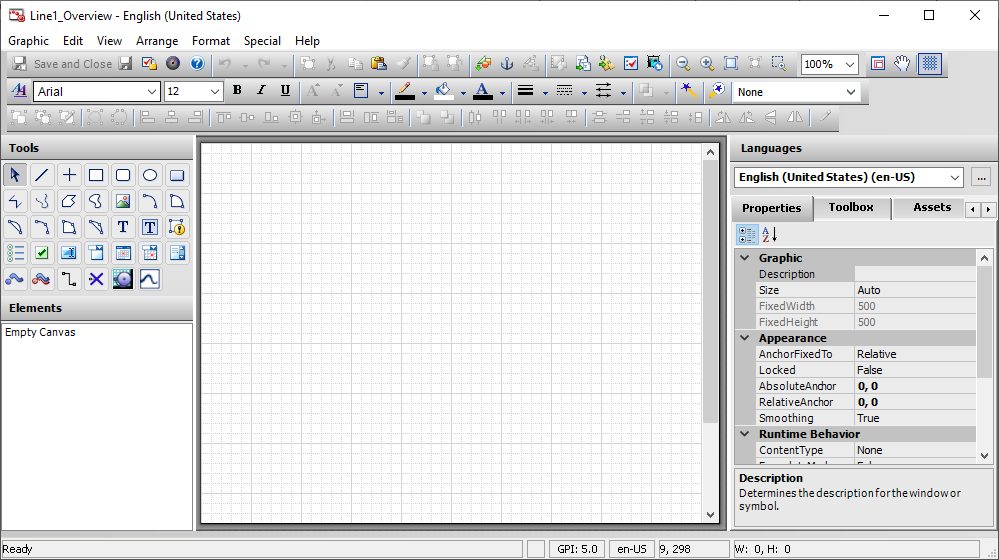
Lab 4 – Using Situational Awareness Dashboard Symbols
AVEVA™ Operations Management Interface 2023
6.
On the Properties tab for the symbol, select the Runtime Behavior \ ContentType property.
7.
Click the down-arrow on the right side of the field to display a drop-down list of content types.
8.
Check Overview as the content type.
You may need to click the canvas to close the drop-down list.
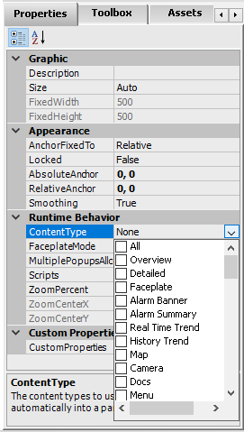
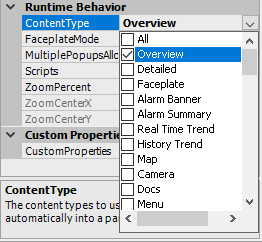
Module 3 – Industrial Graphics
AVEVA™ Training
The Runtime Behavior \ ContentType property is set to Overview.
Embed Symbols and Configure the Embedded Symbols
Now, you will search for symbols and embed SA_ColumnChart from the Situational Awareness
Library dashboard tools. You will configure custom properties for the embedded symbols to
reference level and temperature attributes from objects within Line1. You will also use string
substitution to customize the labels in the embedded symbols to display chart information, such as
the chart heading and the horizontal axis description.
9.
On the right side of the Graphic Editor, select the Toolbox tab.
Notice that it provides a Search field.
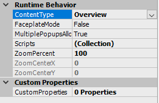
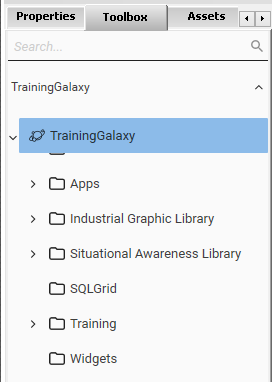
Lab 4 – Using Situational Awareness Dashboard Symbols
AVEVA™ Operations Management Interface 2023
10. In the Search field, enter columnchart as a search string.
Items matching the columnchart search string are found.
11. From the Toolbox tab preview area, drag SA_ColumnChart to the drawing canvas.
A symbol named SA_ColumnChart1 is placed on the canvas.
Notice that by default, the symbol includes ten bars.
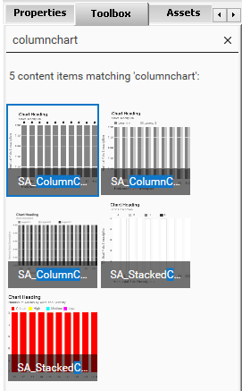
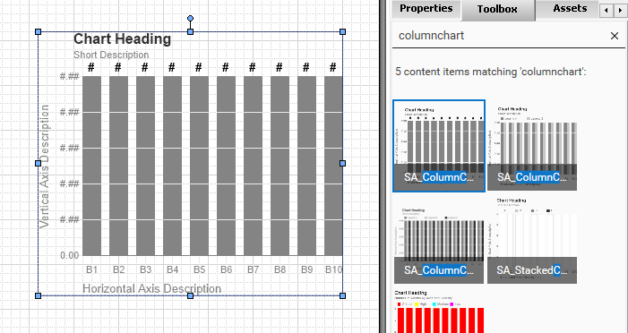
Module 3 – Industrial Graphics
AVEVA™ Training
12. With SA_ColumnChart1 still selected on the drawing canvas, select the Properties tab.
13. On the Properties tab, select Wizard Options \ NumberofBars.
14. Click the down-arrow to display a drop-down list, and then select Four.
The Wizard Options \ NumberofBars property is set to Four.
Notice that the SA_ColumnChart1 symbol on the drawing canvas changes to display four
bars.
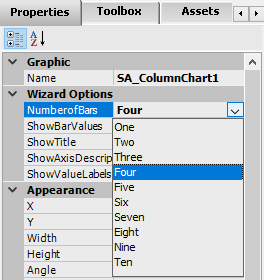
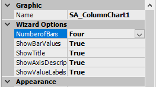
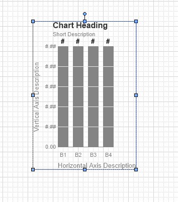
Lab 4 – Using Situational Awareness Dashboard Symbols
AVEVA™ Operations Management Interface 2023
15. Right-click the SA_ColumnChart1 symbol and select Custom Properties.
The Edit Custom Properties dialog box appears.
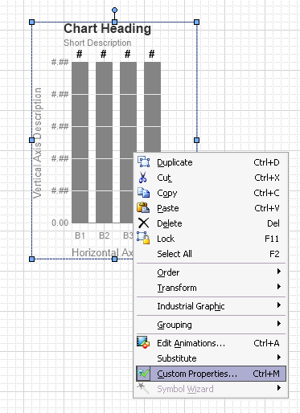
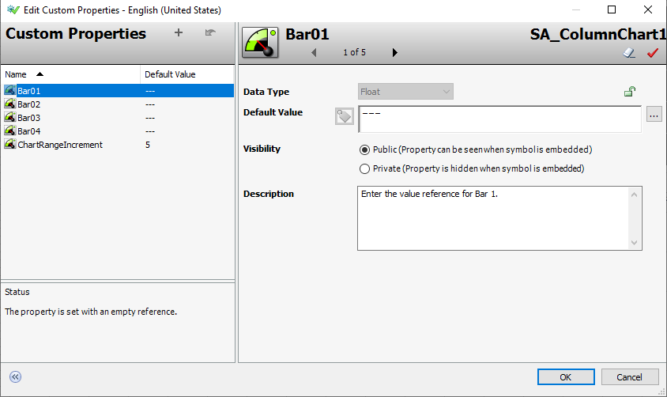
Module 3 – Industrial Graphics
AVEVA™ Training
16. In the left pane, ensure Bar01 is selected.
17. In the right pane, in the Default Value field, remove the three dashes ( --- ) from the field.
The field appears with a red outline.
18. Click the ellipsis button to the right of the Default Value field.
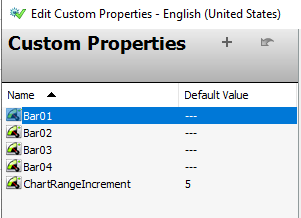
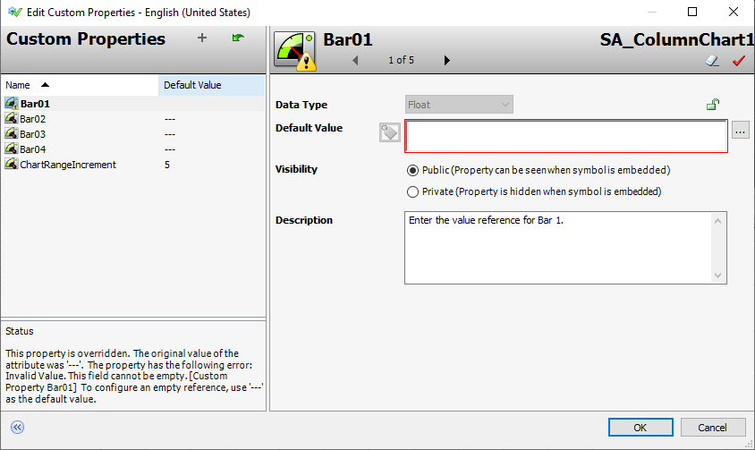
Lab 4 – Using Situational Awareness Dashboard Symbols
AVEVA™ Operations Management Interface 2023
The Galaxy Browser appears.
19. In the Galaxy Browser, click Show Hierarchical Name.
20. In the Instances list, select Mixer100.Level, and in the Attribute list, select PV.
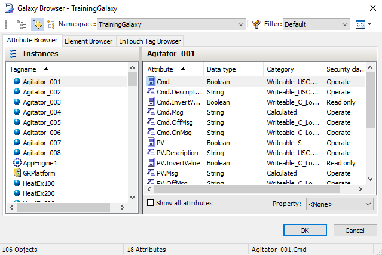
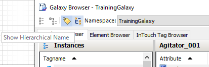
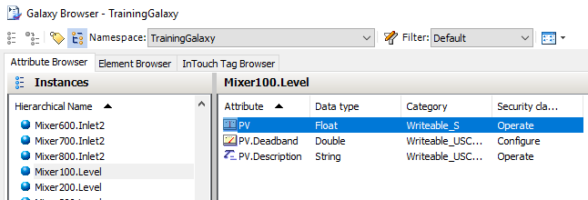
Module 3 – Industrial Graphics
AVEVA™ Training
21. Click OK to close the Galaxy Browser.
The Default Value field for Bar01 now shows Mixer100.Level.PV.
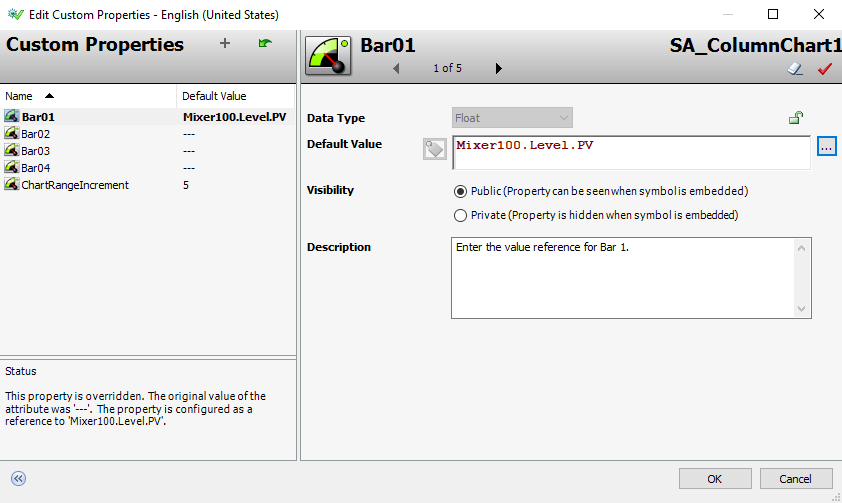
Lab 4 – Using Situational Awareness Dashboard Symbols
AVEVA™ Operations Management Interface 2023
22. In the Edit Custom Properties dialog box, configure other custom properties as follows:
You can refer to Steps 16-21 to configure the custom properties by selecting attributes
from the Galaxy Browser. Or, you can use the auto-complete feature to complete the
configuration for each custom property by typing the reference in the Default Value field.
Custom properties appear as shown below.
23. Click OK to close the Edit Custom Properties dialog box.
Name
Default Value
Bar02
Mixer200.Level.PV
Bar03
Mixer300.Level.PV
Bar04
Mixer400.Level.PV
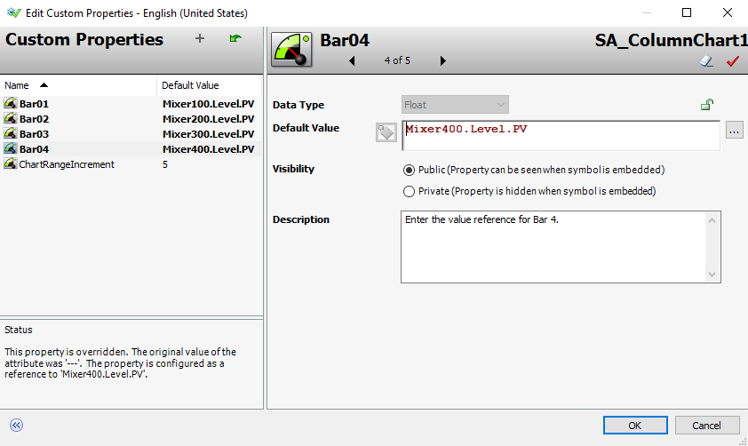
Module 3 – Industrial Graphics
AVEVA™ Training
24. On the drawing canvas, right-click the SA_ColumnChart1 symbol and select Substitute |
Substitute Strings.
The Substitute Strings dialog box appears.
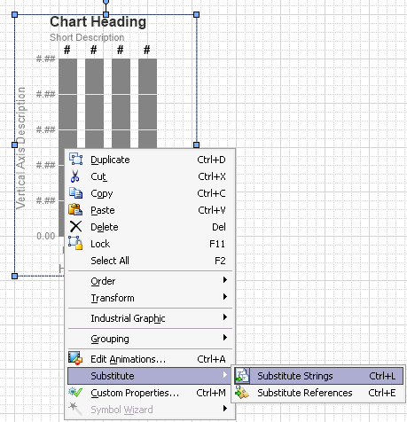
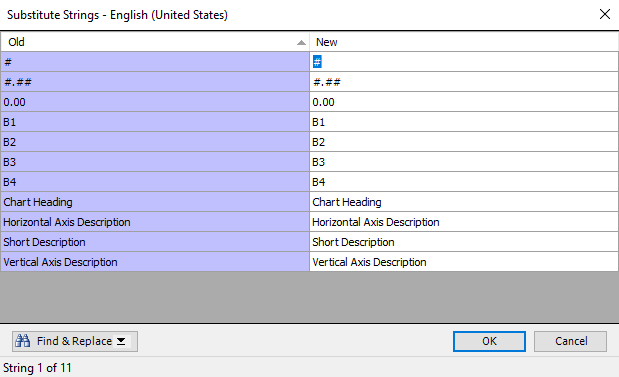
Lab 4 – Using Situational Awareness Dashboard Symbols
AVEVA™ Operations Management Interface 2023
25. In the Substitute Strings dialog box, configure strings in the New column as follows:
The strings that were changed appear as bold in the New column.
Old
New
Chart Heading
Line 1
Horizontal Axis Description
Mixers
Short Description
Current level of mixers in Line 1
Vertical Axis Description
Current Level
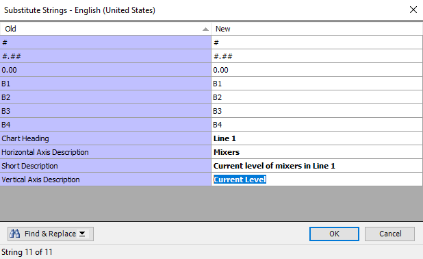
Module 3 – Industrial Graphics
AVEVA™ Training
26. Click Find & Replace.
The Find & Replace area expands to show additional fields.
27. In the Find What? field, enter B, and in the Replace with field, enter M.
For the purposes of this lab, the letter M is used in the column headings for this
symbol to stand for “mixers.”
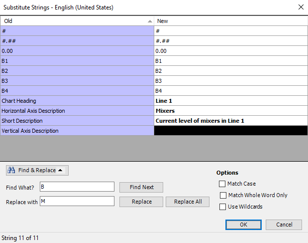
Lab 4 – Using Situational Awareness Dashboard Symbols
AVEVA™ Operations Management Interface 2023
28. Click Replace All.
Notice that the replaced text displays as bold in the New column.
29. Click OK to close the Substitute Strings dialog box.
The strings on SA_ColumnChart1 are updated.
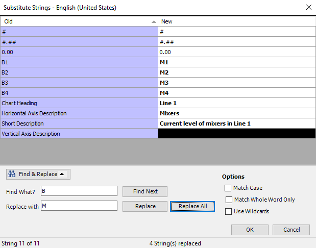
Module 3 – Industrial Graphics
AVEVA™ Training
30. On the drawing canvas, right-click the SA_ColumnChart1 symbol and select Duplicate.
The SA_ColumnChart1 symbol is duplicated on the canvas.
The name of the duplicate symbol is EmbeddedSymbol1.
31. On the drawing canvas, ensure EmbeddedSymbol1 is selected and move it to the right of
SA_ColumnChart1.
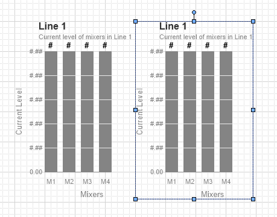
Lab 4 – Using Situational Awareness Dashboard Symbols
AVEVA™ Operations Management Interface 2023
32. Right-click EmbeddedSymbol1 and select Substitute | Substitute References.
The Substitute Reference dialog box appears.
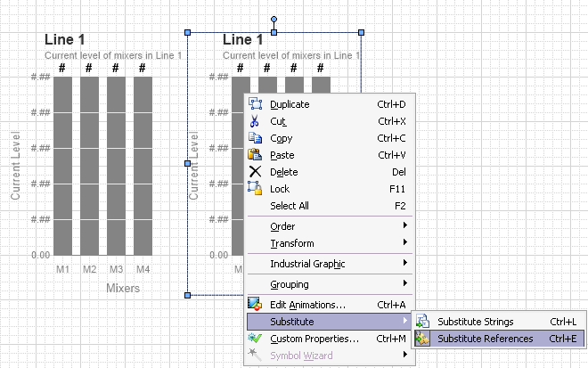
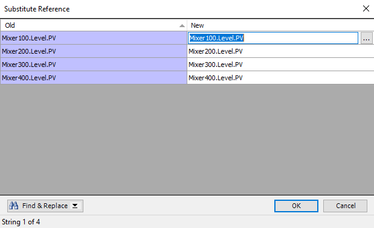
Module 3 – Industrial Graphics
AVEVA™ Training
33. Click Find & Replace.
34. In the Find What? field, enter Level, and in the Replace with field, enter Temperature.
35. Click Replace All.
The references in the New column appear as shown below.
36. Click OK to close the Substitute Reference dialog box.
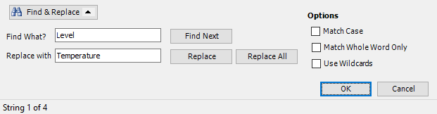
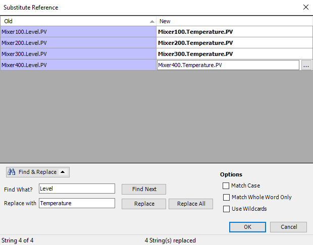
|
Screenshot — Substitute Strings Dialog:
• Row "Current Level" → Current Temperature (bold)
• Row "Current level of mixers in Line 1" → Current temperature of mixers in Line 1 (bold)
• Row "Line 1" → | (single space, red arrow with annotation "This is one space")
• Status: String 6 of 11
• Find & Replace section collapsed
Lab 4 – Using Situational Awareness Dashboard Symbols
AVEVA™ Operations Management Interface 2023
37. Right-click EmbeddedSymbol1 and select Substitute | Substitute Strings.
38. In the Substitute Strings dialog box, configure strings in the New column as follows:
Line 1 already displays as the chart heading in the SA_ColumnChart1 symbol, so
there is no need to have it display for EmbeddedSymbol1.
39. Click OK to close the Substitute Strings dialog box.
Old
New
Current Level
Current Temperature
Current level of mixers in Line 1
Current temperature of mixers in Line 1
Line 1
used in the New column.> 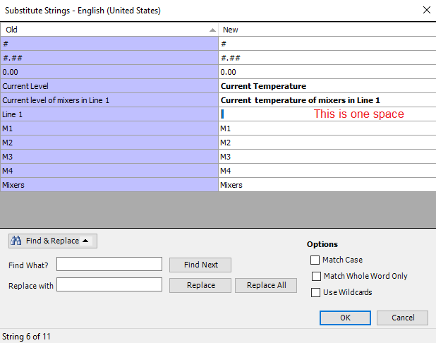 Module 3 – Industrial Graphics AVEVA™ Training Save and Check In the Symbol 40. Click Save and Close to save the symbol and close the Graphic Editor. The Check-in dialog box appears. 41. Click Check-in to check in the symbol. Associate the Symbol with an Automation Object In the following steps, you will link the Line1_Overview symbol to the Line1 automation object. 42. In the Deployment view, double-click Line1 to open it in the Object Editor. 43. On the Attributes tab, in the Content pane, click Link Content. The Galaxy Browser appears. 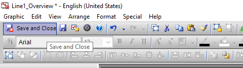 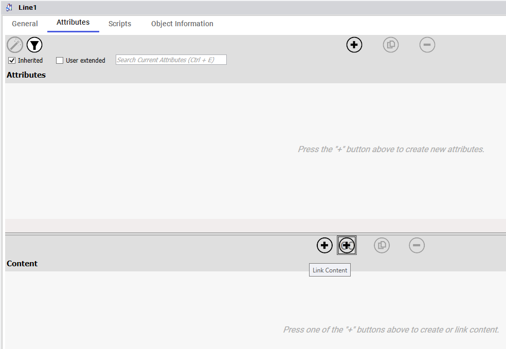 Lab 4 – Using Situational Awareness Dashboard Symbols AVEVA™ Operations Management Interface 2023 44. In the Graphic Toolbox pane, select the Training \ Symbols toolset, and in the Symbols pane, select Line1_Overview. 45. Click OK to close the Galaxy Browser. Notice that Line1_Overview is linked to the Line1 object. 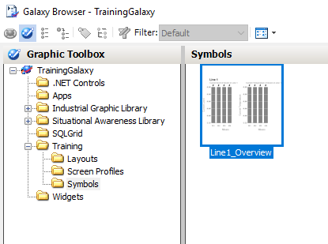 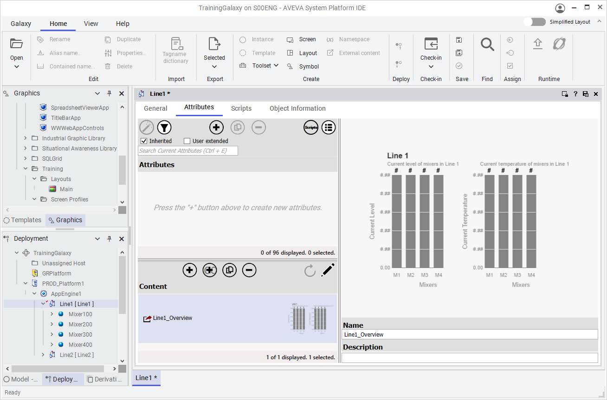 (selected) • Name field: red arrow points here • Description field: empty • Preview: Two vertical bars M1, M2 (0.00), 0 at bottom • Status: 1 of 1 displayed, 1 selected • Blue footer: Line1 * (asterisk = unsaved) Step 47: Save and close Line1 object, check it in. Section: Update Other Area Objects • Import prebuilt .aaPKG file (ContentType = Overview) • Steps 48-51: 48. Galaxy menu → Import | Objects | From package 49. Navigate to C:\Training, select "Lab 4 - Overview Symbols_Prebuilt.aaPKG", click Open 50. Leave default import preferences, click Import 51. Click Close when complete Module 3 – Industrial Graphics AVEVA™ Training 46. In the Name field, rename the symbol to Overview and press Enter. 47. Save and close the Line1 object, and check it in. Update Other Area Objects Now you will update other area objects to include overview symbols. For the purposes of this lab, you will import the other overview symbols from a prebuilt aaPKG file. These symbols have already been configured with the ContentType property set to Overview. 48. On the ribbon, select the Galaxy menu, and then select Import | Objects | From package. The Import Objects from package dialog box appears. 49. Navigate to C:\Training, select the Lab 4 - Overview Symbols_Prebuilt.aaPKG file, and then click Open. The Import preferences dialog box appears. 50. Leave the default import preferences and click Import. 51. When the import process is complete, click Close. 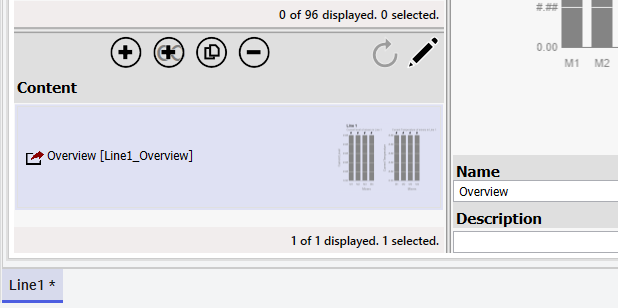 Lab 4 – Using Situational Awareness Dashboard Symbols AVEVA™ Operations Management Interface 2023 52. In the top-left corner of the backstage view, click the left arrow button to return to the main page of the System Platform IDE. Several symbols are imported to the Graphics tab and listed in the Training \ Symbols toolset with Line1_Overview. 53. Repeat Steps 42-47 to link symbols to automation objects as follows: Area Object Symbol Name Line2 Line2_Overview Overview Packaging Packaging_Overview Overview Production Production_Overview Overview 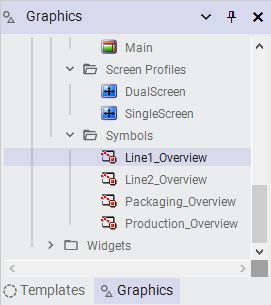 Module 3 – Industrial Graphics AVEVA™ Training Test the ViewApp in a Preview Session Now you will test the ViewApp in a preview session to see the symbols. 54. On the Templates tab, in the Training \ ViewApps toolset, double-click $ViewApp_Training to open it in the ViewApp Editor. 55. In the top-right corner of the ViewApp Editor, click Preview. You may need to wait for a few seconds for Preview to become available. The preview session opens and is available in the task bar. When the preview session opens, notice that the Overview symbol from the Packaging area displays in Pane1, which is configured to display Overview type of content. 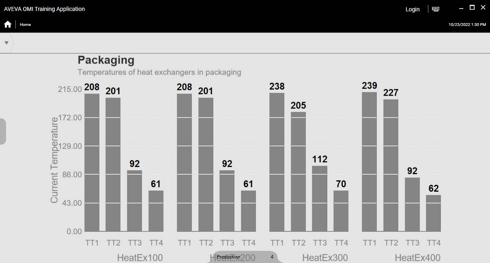 Lab 4 – Using Situational Awareness Dashboard Symbols AVEVA™ Operations Management Interface 2023 56. Use the navigation tools to navigate to different areas and observe the auto-fill behavior. You can navigate using the NavBreadcrumbControl or the NavTreeControl. For example: Navigate to Production. The display shows Production Overview. Navigate to Line1. The display shows Line1 Overview. The following example shows the ViewApp navigated to Line1. 57. Now navigate to the following: Navigate to Line2: What do you expect to see? ________________________________________ Why? __________________________________________________________ Navigate to Mixer500: What do you expect to see? ________________________________________ Why? __________________________________________________________ 58. When you are finished testing, minimize the preview session and the ViewApp Editor. 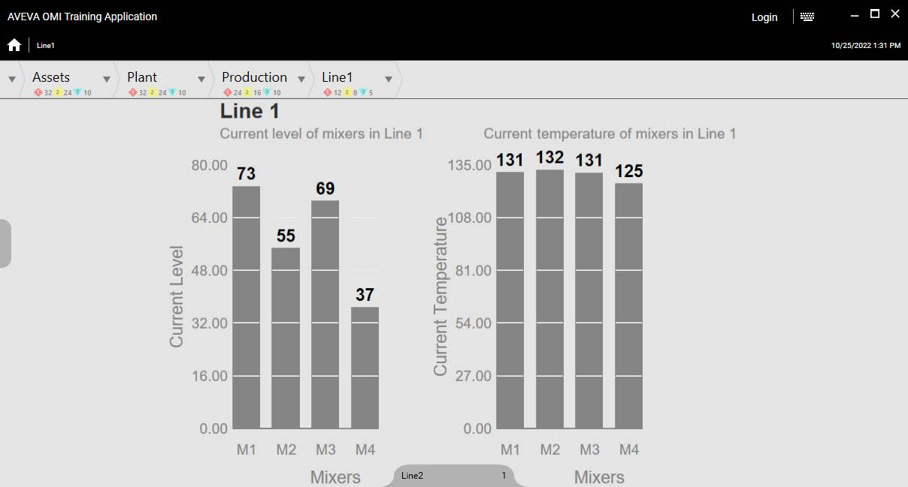 Module 3 – Industrial Graphics AVEVA™ Training Review above.Knowledge Check
Q1: What are the main concepts?